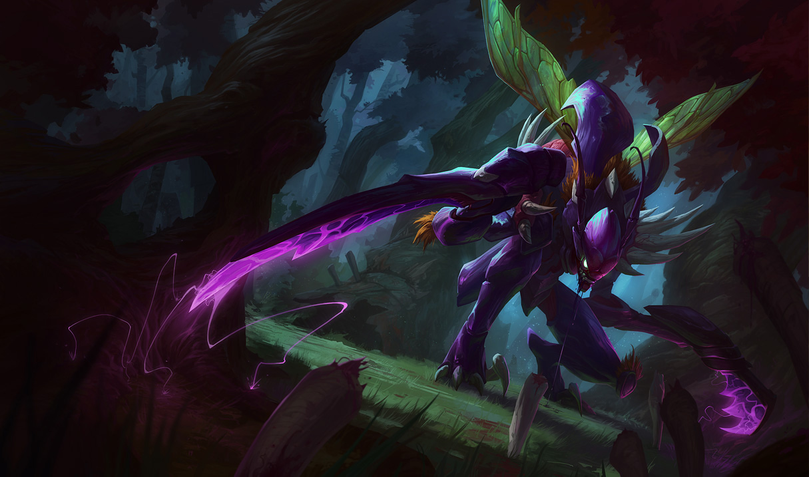

Jungler考察ページ
Junglerの概要
Junglerの特徴として留意することは以下の点です:
・マップを自由に駆け回れる
・スマイトを持っている
・序盤は他レーナーと比べ成長速度が速い
以上の点からjunglerの主な目標は
・序盤の影響力を生かし他レーンに奇襲をかける
・マップの重要箇所の視界を取り、相手ジャングラーの位置を把握し味方に伝える
Junglerの特徴として留意することは以下の点です:
・マップを自由に駆け回れる
・スマイトを持っている
・序盤は他レーナーと比べ成長速度が速い
以上の点からjunglerの主な目標は
・序盤の影響力を生かし他レーンに奇襲をかける
・マップの重要箇所の視界を取り、相手ジャングラーの位置を把握し味方に伝える